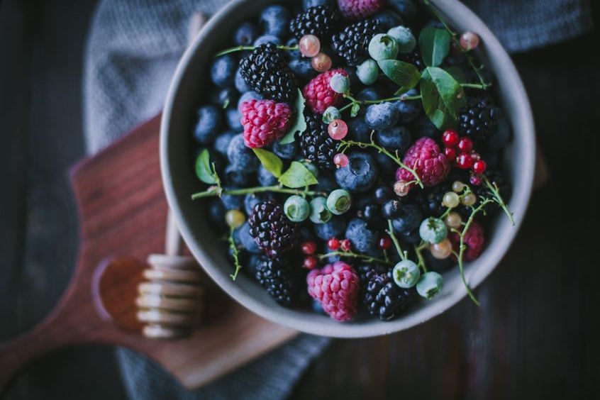

Previous
Next
Vegan 101
Home
Fact
Test
Q&As
Group
Q&As for Veganism
6 Common questions people always ask
(Click on them to see the answers)
Tip 1:
Why is it wrong to eat meat?
Tip 2:
Why should I cut milk and eggs?
Tip 3:
Where do I get my protein?
Tip 4:
What about free-range farms?
Tip 5:
What's wrong with honey?
Tip 6:
Isn’t being vegan expensive?
What is your questions?
Save
Back to the Top